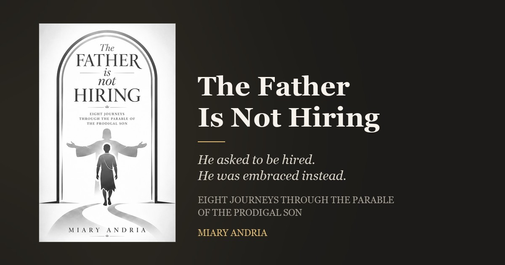

prodigal-son.com
An arched doorway standing open, the father with arms wide, the son walking in off the winding road. Every element of the book is in it: the open door that never shuts, the run, the embrace, and the road that runs in both directions.
The same illustration, with the title set inside the arch. Cover and logo are one drawing, which is why the site needs no separate visual language for the book.

A simplified drawing of the same scene for small sizes, where the full logo turns to mush. It holds down to roughly 18 px. Use it for favicons, avatars, and the site header.
The logo is black and white, so the palette stays out of its way: ink and paper, lit by a single lamp. The lamplight gold is the only hue, and it carries the porch-light idea the book keeps returning to.
The book is monochrome throughout. The interior once specified a slate teal for pull-quote rules; those rules are now set in a mid grey, #6B655D, so no spot colour appears anywhere in the cover, the logo, or the interior. Lamplight gold is a web accent only, used for type and rules.
| File | What it is | Use |
|---|---|---|
assets/logo-ink.png | Full logo, ink, transparent | Light backgrounds |
assets/logo-paper.png | Full logo, paper, transparent | Dark backgrounds |
assets/logo-ink-sm.png | Full logo at 28% | Email, thumbnails |
assets/mark.svg | Simplified mark, currentColor | Inline in HTML only |
assets/mark-ink.svg | Simplified mark, fixed ink | <img>, favicon, social |
assets/mark-paper.svg | Simplified mark, fixed paper | <img> on dark |
assets/cover-440.jpg | Book cover, 440 px wide | Site, 1× |
assets/cover-880.jpg | Book cover, 880 px wide | Site, 2× (srcset) |
assets/og-cover.jpg | Social card, 1200×630 | Open Graph, Twitter |
../design-logo.png | Original logo artwork, white background | Master. Print, or re-deriving assets |
../design2.png | Original cover, 3333×5329 | Master. Print, or re-deriving covers |
currentColor needs inlining. An SVG loaded through <img> is an isolated document and cannot inherit page colour. Inline mark.svg, or use the fixed-colour variants.